📖
الخلية النباتية والخلية الحيوانية
الفصل الأول: الخلايا · الصفحات ٣٢ – ٤١
❓ السؤال الأساسيكيف تقوم الخلايا بالعمليات الحيوية؟
💡 الزبدة⚖️ انتبهي للفرق🔍 توضيح⚠️ فخ في الاختبار✍️ حلّ سؤال الكتاب
في كل بطاقة فكرة واحدة: اقرئي فقرة الكتاب ثم حاشيتها، ثم اسحبي إلى البطاقة التالية 👈
أنظر وأتساءل
الخلايا هي الوحدات البنائية الأساسية للحياة، وتقوم بوظائف محددة لمساعدة المخلوقات الحية على العيش، مثل الضفدع أو نبات عدس الماء. كيف يمكن المقارنة بين تركيب الخلية النباتية والخلية الحيوانية؟
✍️ الجوابفكّري ثم اضغطي
تشترك الخليتان في أجزاء، منها الغشاء البلازمي والنواة والسيتوبلازم، وتنفرد الخلية النباتية بالجدار الخلوي والبلاستيدات الخضراء.
📝 مفردات الدرس
النقل السلبيحركة المواد عبر أغشية الخلية من دون أن تستخدم الخلية طاقة.
الانتشارانتقال المواد عبر الغشاء البلازمي من منطقة التركيز المرتفع إلى منطقة التركيز المنخفض.
الخاصية الأسموزيةانتقال جزيئات الماء عبر الغشاء البلازمي.
البناء الضوئيعملية تستخدم فيها النباتات طاقة الشمس لإنتاج غذاء على شكل سكر الجلوكوز.
التنفس الخلويعملية تحلّل فيها الخلايا السكر وتطلق الطاقة.
النقل النشطانتقال المواد عبر الأغشية من التركيز المنخفض إلى التركيز المرتفع، ويحتاج إلى طاقة.
ص٣٤ · المقارنة بين الخلايا النباتية والحيوانية
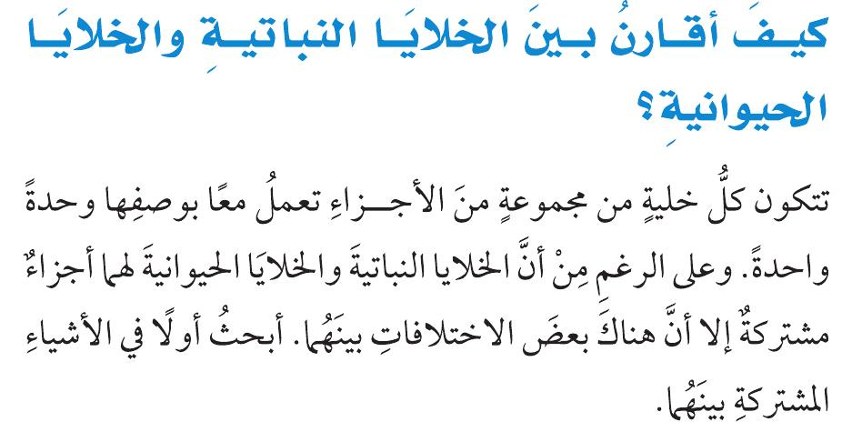
💡 الزبدة
الخلية النباتية والخلية الحيوانية لهما أجزاء مشتركة، وبينهما بعض الاختلافات.
ص٣٤ · المقارنة بين الخلايا النباتية والحيوانية
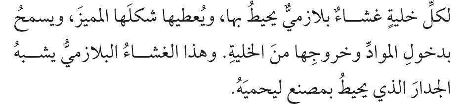
💡 الزبدة
الغشاء البلازمي يحيط بكل خلية، ويعطي بعضها شكلها المميز، ويسمح بدخول المواد وخروجها؛ فهو يشبه الجدار الذي يحيط بمصنع ليحميه.
ص٣٤ · المقارنة بين الخلايا النباتية والحيوانية
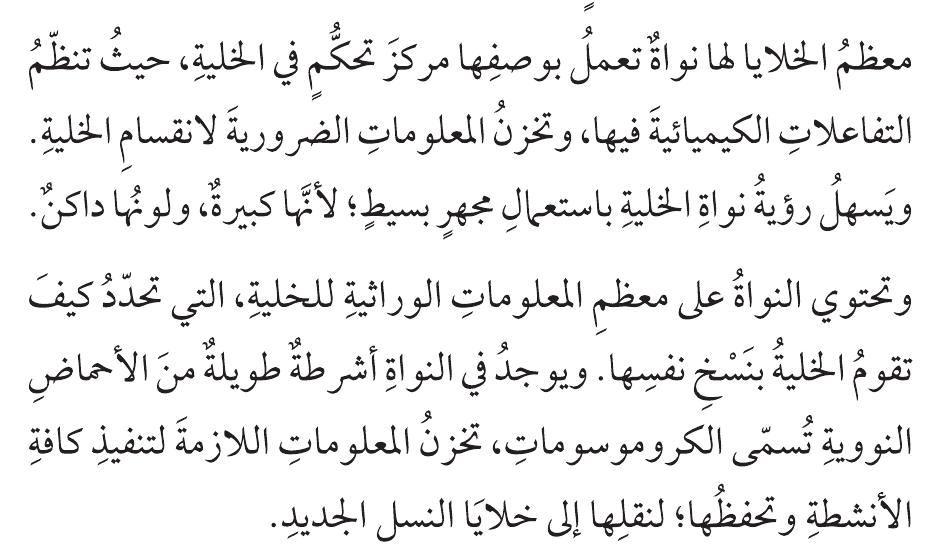
💡 الزبدة
النواة مركز التحكم في الخلية: تنظّم التفاعلات الكيميائية، وتخزّن المعلومات الضرورية لانقسام الخلية، وتحدد كيف تقوم الخلية بنسخ نفسها.
🔍 توضيح
في النواة أشرطة طويلة من الأحماض النووية تسمى الكروموسومات، تخزّن المعلومات اللازمة لتنفيذ الأنشطة، وتحفظها لنقلها إلى خلايا النسل الجديد.
⚠️ فخ في الاختبار
نرى النواة بسهولة بمجهر بسيط؛ لأنها كبيرة ولونها داكن.
ص٣٤ · المقارنة بين الخلايا النباتية والحيوانية
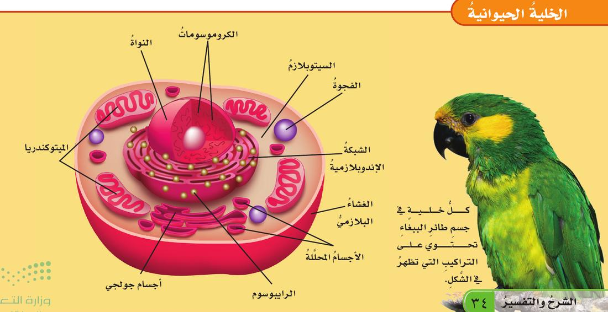
⚠️ فخ في الاختبار
الخلية الحيوانية ليس فيها جدار خلوي ولا بلاستيدات خضراء.
ص٣٥ · تركيب الخلية النباتية
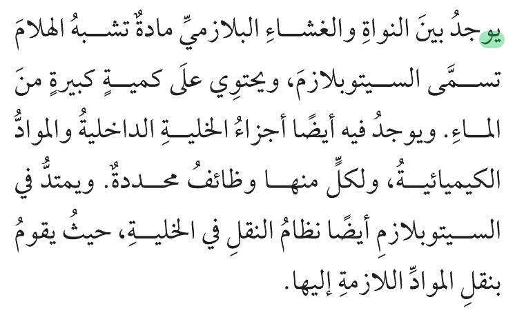
💡 الزبدة
السيتوبلازم مادة تشبه الهلام بين النواة والغشاء البلازمي، فيه كمية كبيرة من الماء، وفيه أجزاء الخلية الداخلية، ويمتد فيه نظام نقل ينقل المواد اللازمة إليها.
ص٣٥ · تركيب الخلية النباتية
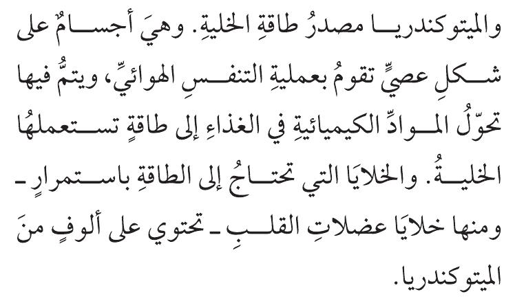
💡 الزبدة
الميتوكندريا مصدر طاقة الخلية: أجسام عصوية تتم فيها عملية التنفس الهوائي، فتتحول المواد الكيميائية في الغذاء إلى طاقة.
🔍 توضيح
الخلايا التي تحتاج إلى الطاقة باستمرار، ومنها خلايا عضلات القلب، تحتوي على آلاف الميتوكندريا.
ص٣٥ · تركيب الخلية النباتية
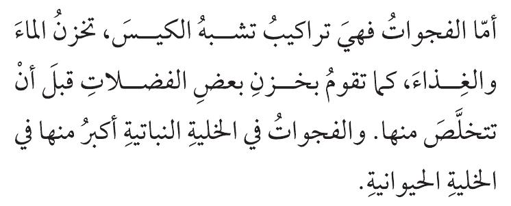
💡 الزبدة
الفجوات تراكيب تشبه الكيس، تخزّن الماء والغذاء، وتخزّن بعض الفضلات قبل التخلص منها.
⚠️ فخ في الاختبار
الفجوات في الخلية النباتية أكبر منها في الخلية الحيوانية.
ص٣٥ · تركيب الخلية النباتية
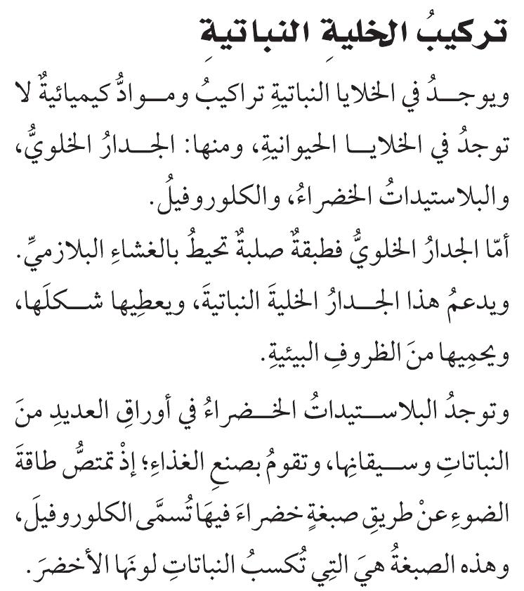
⚖️ انتبهي للفرق
| النباتية | الحيوانية | |
|---|---|---|
| الجدار الخلوي | ✔️ | ✖️ |
| البلاستيدات الخضراء | ✔️ | ✖️ |
| الفجوات | أكبر | أصغر |
💡 الزبدة
الجدار الخلوي طبقة صلبة تحيط بالغشاء البلازمي؛ يدعم الخلية النباتية ويعطيها شكلها ويحميها.
البلاستيدات الخضراء تمتص طاقة الضوء بصبغة الكلوروفيل وتصنع الغذاء، والكلوروفيل يُكسب النبات لونه الأخضر.
البلاستيدات الخضراء تمتص طاقة الضوء بصبغة الكلوروفيل وتصنع الغذاء، والكلوروفيل يُكسب النبات لونه الأخضر.
ص٣٥ · تركيب الخلية النباتية
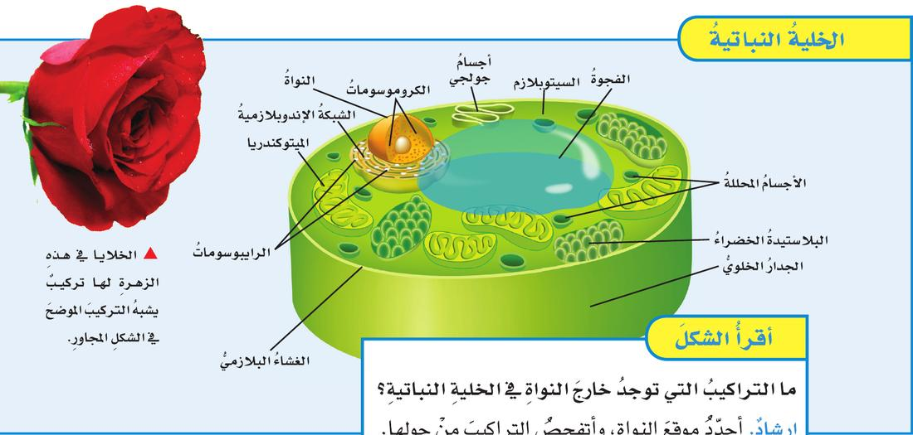
✍️ حلّ «أقرأ الشكل»اضغطي لتري الإجابة
السيتوبلازم، والفجوة، والميتوكندريا، والبلاستيدات الخضراء، وأجسام جولجي، والرايبوسومات، والشبكة الإندوبلازمية، والأجسام المحللة، والغشاء البلازمي، والجدار الخلوي.
ص٣٥ · تركيب الخلية النباتية
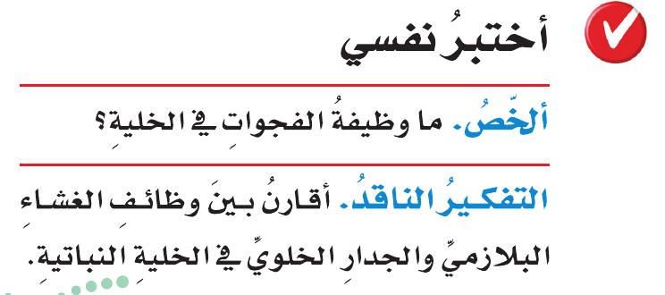
✍️ حلّ «أختبر نفسي»اضغطي لتري الإجابة
ألخص: تخزّن الماء والغذاء، وتخزّن بعض الفضلات قبل التخلص منها.
التفكير الناقد: كلاهما يحيط بالخلية؛ الغشاء البلازمي يسمح بدخول المواد وخروجها، والجدار الخلوي طبقة صلبة تدعم الخلية وتعطيها شكلها وتحميها، ويوجد في الخلية النباتية فقط.
التفكير الناقد: كلاهما يحيط بالخلية؛ الغشاء البلازمي يسمح بدخول المواد وخروجها، والجدار الخلوي طبقة صلبة تدعم الخلية وتعطيها شكلها وتحميها، ويوجد في الخلية النباتية فقط.
ص٣٦ · ما النقل السلبي؟
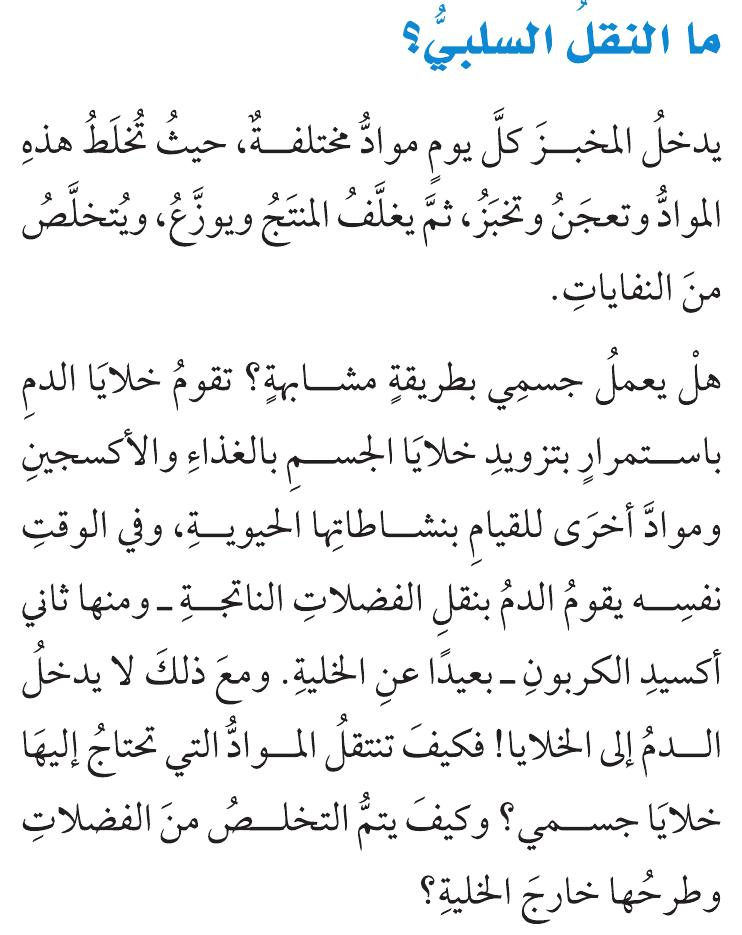
🔍 توضيح
خلايا الدم تزوّد خلايا الجسم بالغذاء والأكسجين، وتنقل الفضلات، ومنها ثاني أكسيد الكربون، بعيدًا عن الخلية. فكيف تدخل المواد إلى الخلايا وتخرج منها؟
ص٣٦ · ما النقل السلبي؟
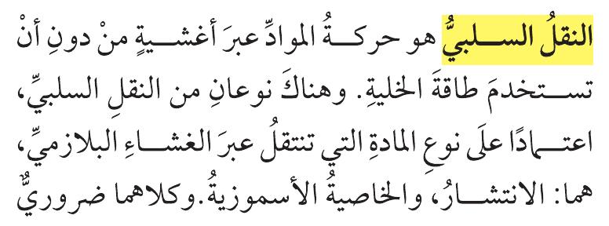
💡 الزبدة
النقل السلبي: حركة المواد عبر أغشية الخلية من دون أن تستخدم الخلية طاقة.
نوعاه: الانتشار والخاصية الأسموزية، وكلاهما ضروري للخلايا.
نوعاه: الانتشار والخاصية الأسموزية، وكلاهما ضروري للخلايا.
ص٣٦ · ما النقل السلبي؟
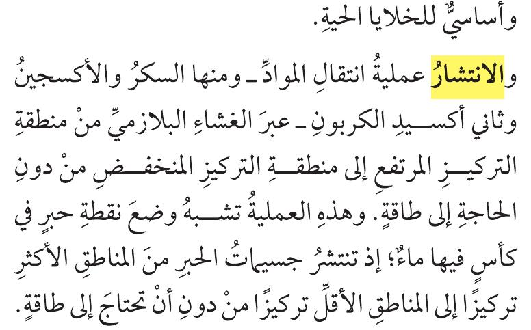
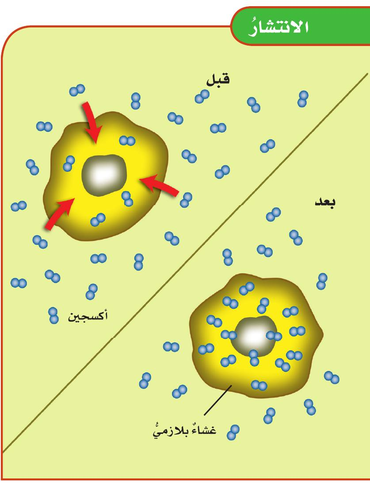
💡 الزبدة
الانتشار: انتقال المواد، ومنها السكر والأكسجين وثاني أكسيد الكربون، عبر الغشاء البلازمي من منطقة التركيز المرتفع إلى منطقة التركيز المنخفض، دون حاجة إلى طاقة.
🔍 توضيح
يشبه وضع نقطة حبر في كأس ماء: تنتشر جسيمات الحبر من المكان الأكثر تركيزًا إلى الأقل تركيزًا.
ص٣٦ · ما النقل السلبي؟
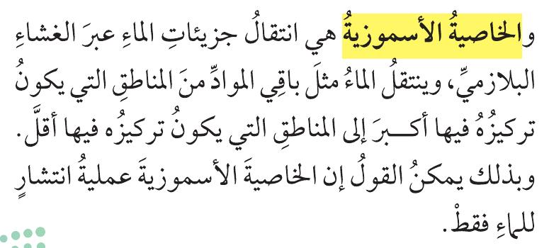
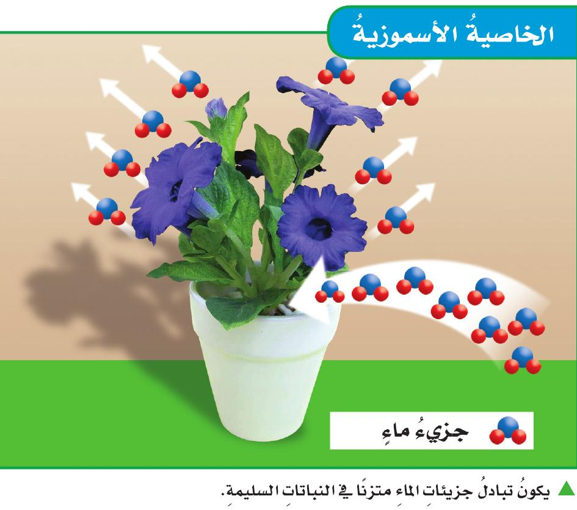
💡 الزبدة
الخاصية الأسموزية: انتقال جزيئات الماء عبر الغشاء البلازمي من المكان الذي يكون تركيزه فيه أكبر إلى المكان الأقل.
⚠️ فخ في الاختبار
الخاصية الأسموزية هي عملية انتشار للماء فقط.
ص٣٧ · الاتزان
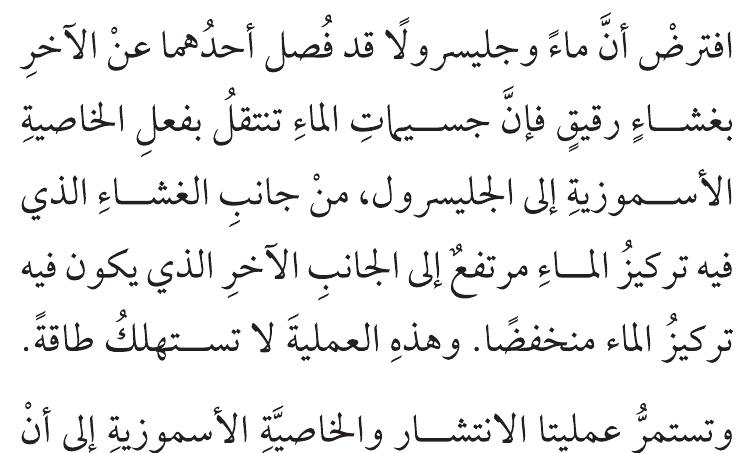
🔍 توضيح
إذا فصل غشاء رقيق بين ماء وجيلسرول، انتقل الماء بالخاصية الأسموزية من الجانب الذي يكون فيه تركيز الماء مرتفعًا إلى الجانب المنخفض، ولا تستهلك العملية طاقة.
ص٣٧ · الاتزان
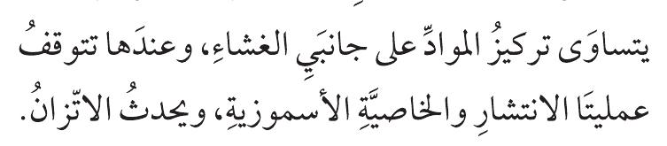
💡 الزبدة
يستمر الانتشار والخاصية الأسموزية حتى يتساوى تركيز المواد على جانبي الغشاء، فيحدث الاتزان.
ص٣٧ · الاتزان
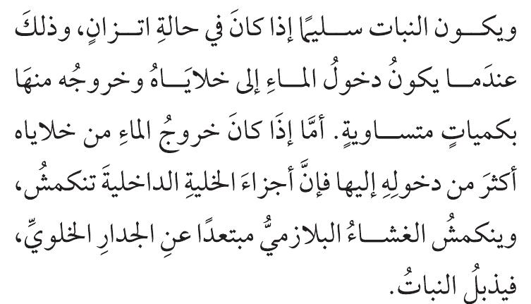
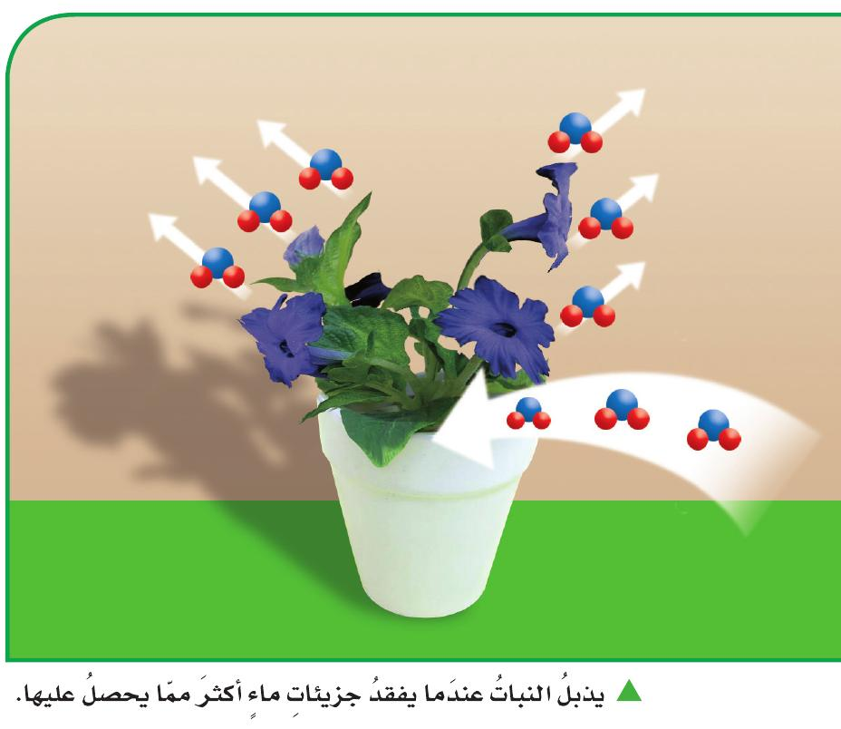
⚖️ انتبهي للفرق
| دخول الماء = خروجه | خروج الماء أكثر من دخوله |
|---|---|
| حالة اتزان | تنكمش أجزاء الخلية، وينكمش الغشاء البلازمي مبتعدًا عن الجدار الخلوي |
| النبات سليم | النبات يذبل |
ص٣٧ · الاتزان
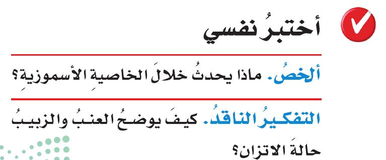
✍️ حلّ «أختبر نفسي»اضغطي لتري الإجابة
ألخص: تنتقل جزيئات الماء عبر الغشاء البلازمي من المكان الأكثر تركيزًا بالماء إلى الأقل، دون أن تستهلك طاقة.
التفكير الناقد: العنب خلاياه في حالة اتزان فهو ممتلئ، أما الزبيب فخرج الماء من خلاياه أكثر من دخوله فانكمش.
التفكير الناقد: العنب خلاياه في حالة اتزان فهو ممتلئ، أما الزبيب فخرج الماء من خلاياه أكثر من دخوله فانكمش.
ص٣٨ · البناء الضوئي
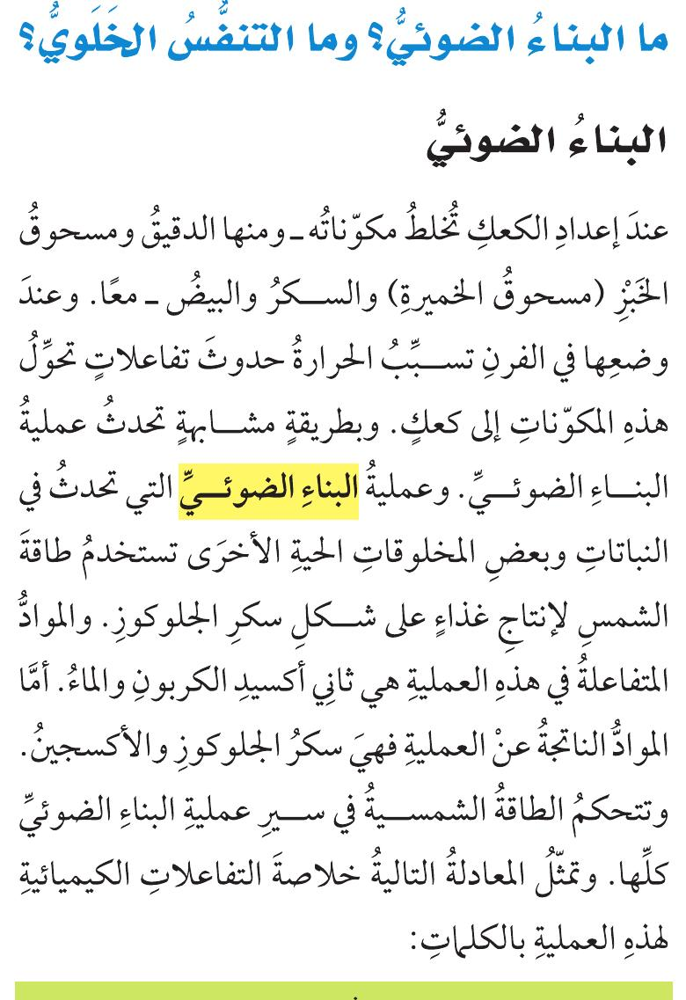
💡 الزبدة
البناء الضوئي عملية تحدث في النباتات وبعض المخلوقات الحية الأخرى، تستخدم طاقة الشمس لإنتاج غذاء على شكل سكر الجلوكوز.
⚖️ انتبهي للفرق
| المواد المتفاعلة | المواد الناتجة |
|---|---|
| ثاني أكسيد الكربون + الماء | سكر الجلوكوز + الأكسجين |
ص٣٨ · البناء الضوئي
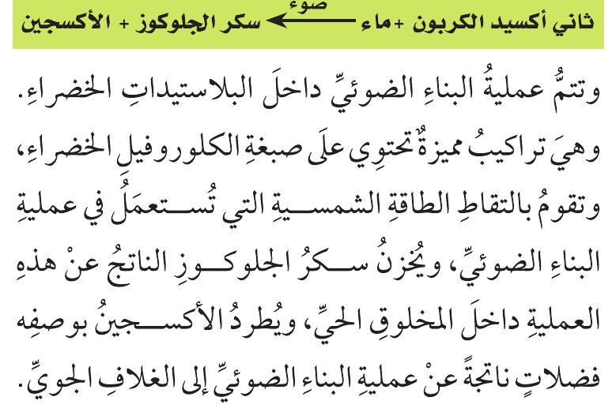
💡 الزبدة
يحدث البناء الضوئي داخل البلاستيدات الخضراء؛ لأنها تحتوي على صبغة الكلوروفيل التي تلتقط الطاقة الشمسية.
يُخزَّن الجلوكوز داخل المخلوق، ويُطرد الأكسجين فضلاتٍ إلى الغلاف الجوي.
يُخزَّن الجلوكوز داخل المخلوق، ويُطرد الأكسجين فضلاتٍ إلى الغلاف الجوي.
ص٣٨ · البناء الضوئي
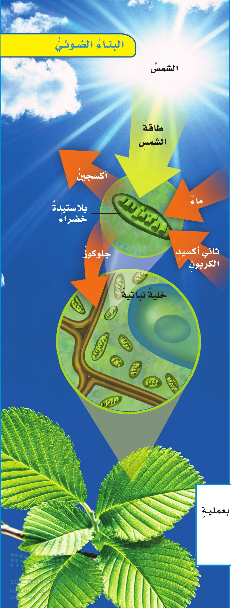
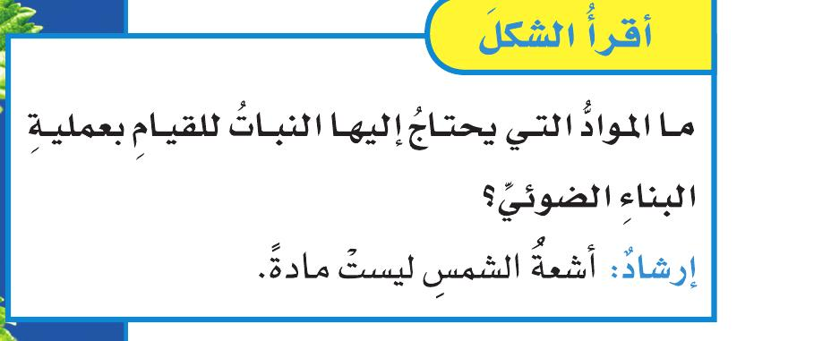
✍️ حلّ «أقرأ الشكل»اضغطي لتري الإجابة
يحتاج النبات إلى ثاني أكسيد الكربون والماء. أما أشعة الشمس فطاقة وليست مادة.
⚠️ فخ في الاختبار
الجلوكوز والأكسجين ينتجان من البناء الضوئي، وليسا مما يحتاج إليه.
ص٣٩ · التنفس والتخمر
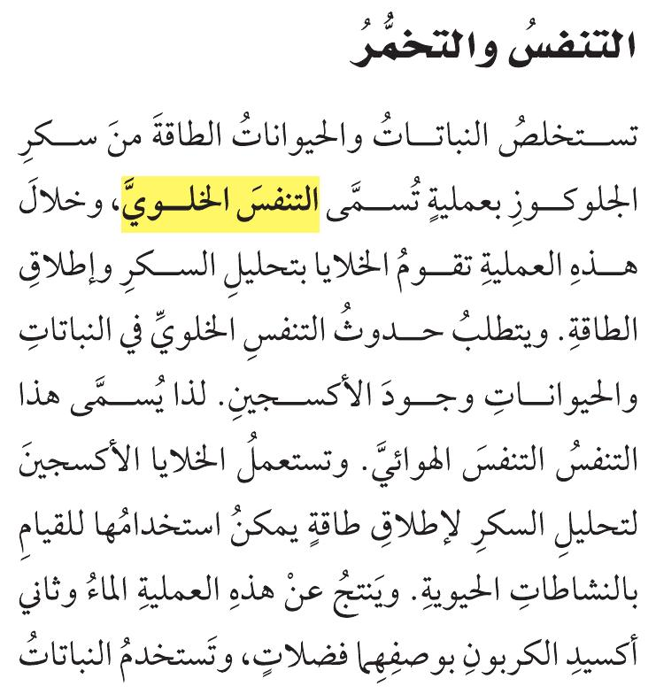
💡 الزبدة
التنفس الخلوي: عملية تحلّل فيها الخلايا السكر وتطلق الطاقة، ويتطلب وجود الأكسجين؛ لذا يسمى التنفس الهوائي.
ينتج عنه الماء وثاني أكسيد الكربون، وتستخدمهما النباتات مرة أخرى في البناء الضوئي.
ينتج عنه الماء وثاني أكسيد الكربون، وتستخدمهما النباتات مرة أخرى في البناء الضوئي.
ص٣٩ · التنفس والتخمر
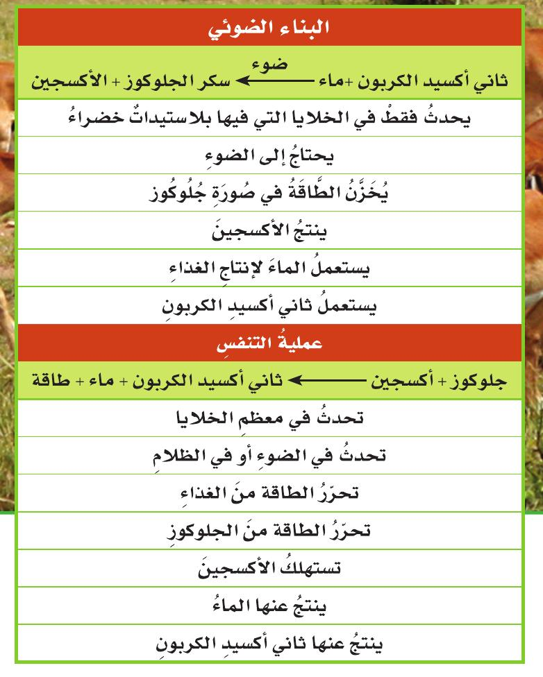
⚖️ انتبهي للفرق
| البناء الضوئي | التنفس |
|---|---|
| يحدث فقط في الخلايا التي فيها بلاستيدات خضراء | يحدث في معظم الخلايا |
| يحتاج إلى الضوء | يحدث في الضوء أو الظلام |
| يخزّن الطاقة في الجلوكوز | يحرّر الطاقة من الجلوكوز |
| ينتج الأكسجين | يستهلك الأكسجين |
| يستعمل الماء وثاني أكسيد الكربون | ينتج الماء وثاني أكسيد الكربون |
⚠️ فخ في الاختبار
العمليتان عكس بعضهما: ما ينتجه البناء الضوئي يستعمله التنفس، وما ينتجه التنفس يستعمله البناء الضوئي.
ص٣٩ · التنفس والتخمر
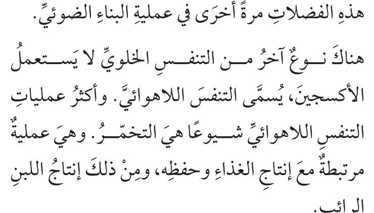
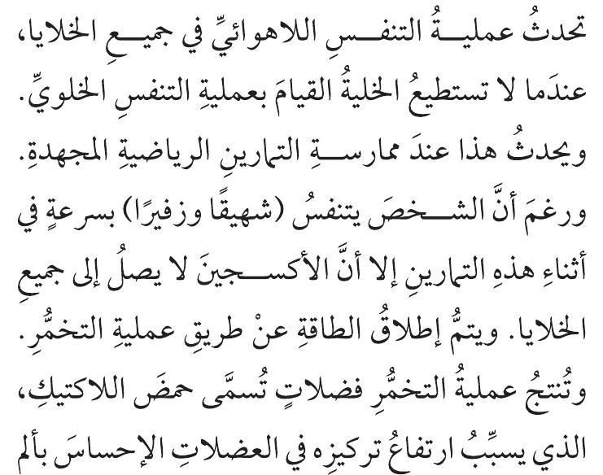
⚖️ انتبهي للفرق
| التنفس الهوائي | التنفس اللاهوائي |
|---|---|
| يستعمل الأكسجين | لا يستعمل الأكسجين |
| أشهره التخمر: ومنه إنتاج الخبز وحفظه وإنتاج اللبن الرائب |
🔍 توضيح
في التمارين الرياضية المجهدة لا يصل الأكسجين إلى جميع الخلايا، فتطلق الطاقة بالتخمر، وينتج حمض اللاكتيك الذي يسبب الإحساس بالألم أو الإعياء في العضلات.
ص٣٩ · التنفس والتخمر
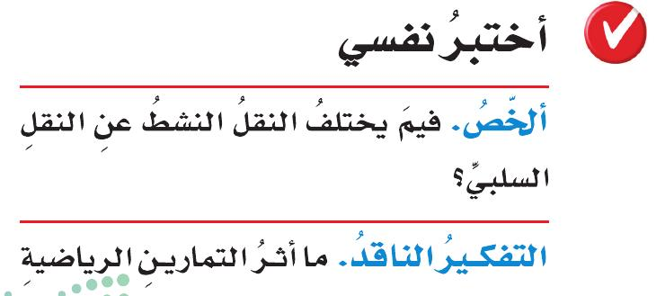
✍️ حلّ «أختبر نفسي»اضغطي لتري الإجابة
ألخص: النقل النشط يحتاج إلى طاقة من الخلية، وينقل المواد من التركيز المنخفض إلى المرتفع، أما النقل السلبي فلا يحتاج إلى طاقة.
التفكير الناقد: لا يصل الأكسجين إلى جميع الخلايا، فتطلق الطاقة بالتخمر، وينتج حمض اللاكتيك الذي يسبب الألم أو الإعياء في العضلات.
التفكير الناقد: لا يصل الأكسجين إلى جميع الخلايا، فتطلق الطاقة بالتخمر، وينتج حمض اللاكتيك الذي يسبب الألم أو الإعياء في العضلات.
ص٤٠ · ما النقل النشط؟
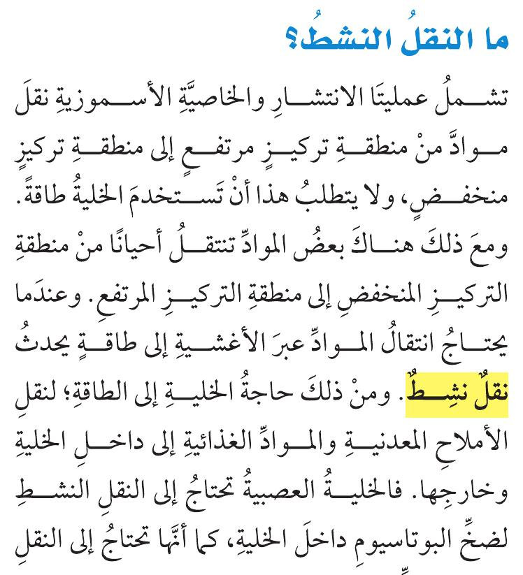
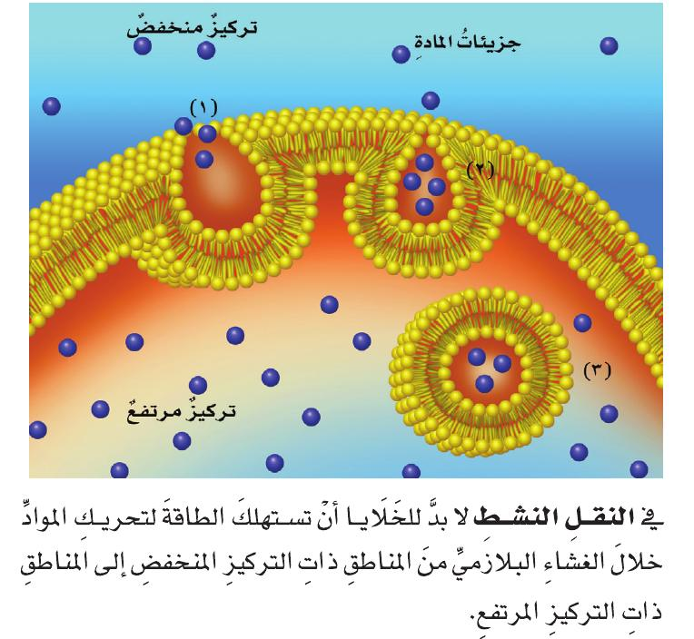
💡 الزبدة
النقل النشط: انتقال المواد عبر الأغشية من منطقة التركيز المنخفض إلى منطقة التركيز المرتفع، ويحتاج إلى طاقة من الخلية.
🔍 توضيح
تحتاج الخلية إلى النقل النشط لنقل الأملاح المعدنية والمواد الغذائية إلى داخلها وخارجها. والخلية العصبية تحتاج إليه لضخ البوتاسيوم داخلها والصوديوم خارجها.
ص٤٠ · ما النقل النشط؟
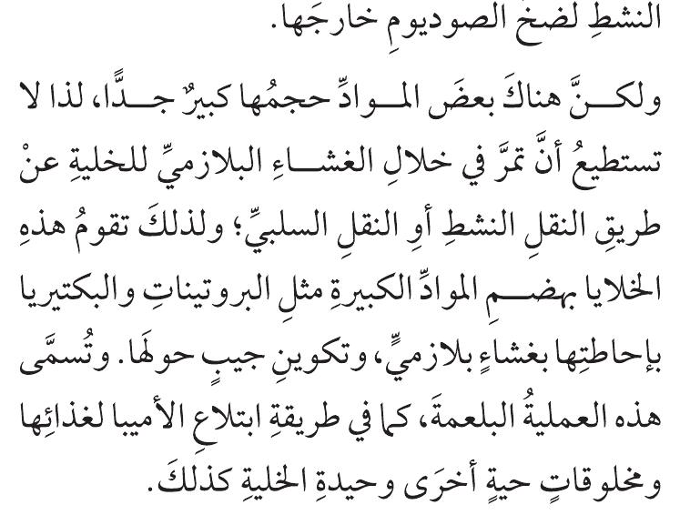
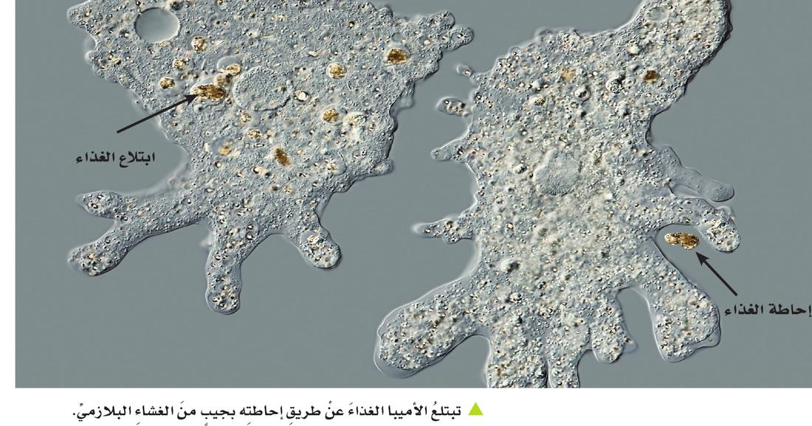
💡 الزبدة
البلعمة: بعض المواد كبيرة جدًا فلا تمر خلال الغشاء البلازمي، فتحيط بها الخلية بجزء من غشائها مكوّنةً جيبًا حولها. وهكذا تبتلع الأميبا غذاءها.
ص٤٠ · ما النقل النشط؟
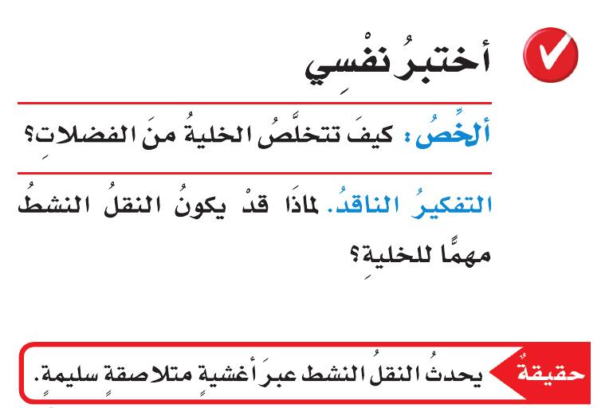
✍️ حلّ «أختبر نفسي»اضغطي لتري الإجابة
ألخص: تنتقل الفضلات، ومنها ثاني أكسيد الكربون، عبر الغشاء البلازمي إلى خارج الخلية، ثم ينقلها الدم بعيدًا عنها.
التفكير الناقد: لأنه ينقل المواد التي تحتاج إليها الخلية من التركيز المنخفض إلى المرتفع، وهذا لا يحدث في النقل السلبي.
التفكير الناقد: لأنه ينقل المواد التي تحتاج إليها الخلية من التركيز المنخفض إلى المرتفع، وهذا لا يحدث في النقل السلبي.
📌 الخلاصة · خريطة المفاهيم
🧫 الخليةنباتية وحيوانية
⬇يحيط بها
🚪 الغشاء البلازمييسمح بدخول المواد وخروجها
⬇تنتقل المواد عبره بـ
🔄 نقل الموادسلبي: انتشار وخاصية أسموزية
نشط · بلعمة
نشط · بلعمة
⬇وتقوم الخلية بعملياتها بـ
⚡ الطاقةالبناء الضوئي يخزّنها · التنفس يحرّرها
مشتركة بين الخليتين
- الغشاء البلازمي
- النواة
- السيتوبلازم
- الميتوكندريا والفجوات
في الخلية النباتية فقط
- الجدار الخلوي
- البلاستيدات الخضراء
📌 الخلاصة · لا تخلطي بينها
| النقل السلبي | النقل النشط | |
|---|---|---|
| الطاقة | لا يحتاج إلى طاقة | يحتاج إلى طاقة من الخلية |
| الاتجاه | من التركيز المرتفع إلى المنخفض | من التركيز المنخفض إلى المرتفع |
| أمثلة | الانتشار، الخاصية الأسموزية | ضخ البوتاسيوم والصوديوم في الخلية العصبية |
📌 الخلاصة · لا تخلطي بينها
| الانتشار | الخاصية الأسموزية | |
|---|---|---|
| ما الذي ينتقل؟ | مواد مثل السكر والأكسجين وثاني أكسيد الكربون | الماء فقط |
| يتوقف عند | تساوي التركيز (الاتزان) | تساوي التركيز (الاتزان) |
📌 الخلاصة · لا تخلطي بينها
| البناء الضوئي | التنفس الخلوي | |
|---|---|---|
| أين؟ | البلاستيدات الخضراء | الميتوكندريا، في معظم الخلايا |
| يستعمل | ثاني أكسيد الكربون والماء | الجلوكوز والأكسجين |
| ينتج | الجلوكوز والأكسجين | الماء وثاني أكسيد الكربون وطاقة |
📌 الخلاصة · أهم النقاط
- تشترك الخليتان النباتية والحيوانية في الغشاء البلازمي والنواة والسيتوبلازم والميتوكندريا والفجوات.
- تنفرد الخلية النباتية بالجدار الخلوي والبلاستيدات الخضراء، وفجواتها أكبر.
- النقل السلبي بلا طاقة: الانتشار، والخاصية الأسموزية (للماء)، ويستمر حتى الاتزان.
- النقل النشط يحتاج إلى طاقة، وتبتلع الأميبا غذاءها بالبلعمة.
- البناء الضوئي يخزّن الطاقة في الجلوكوز، والتنفس الخلوي يحرّرها، والتخمر تنفس لاهوائي.
🧠 اختبري نفسك · ١ من ٤
أيهما يوجد في الخلية النباتية ولا يوجد في الخلية الحيوانية: النواة أم الجدار الخلوي؟
✅ الجوابفكّري ثم اضغطي
الجدار الخلوي، وكذلك البلاستيدات الخضراء.
🧠 اختبري نفسك · ٢ من ٤
ما اسم انتقال جزيئات الماء عبر الغشاء البلازمي؟
✅ الجوابفكّري ثم اضغطي
الخاصية الأسموزية.
🧠 اختبري نفسك · ٣ من ٤
أي النقلين يحتاج إلى طاقة من الخلية؟
✅ الجوابفكّري ثم اضغطي
النقل النشط؛ لأنه ينقل المواد من التركيز المنخفض إلى المرتفع.
🧠 اختبري نفسك · ٤ من ٤
أين تحدث عملية البناء الضوئي؟ وما الصبغة التي تلتقط الطاقة الشمسية؟
✅ الجوابفكّري ثم اضغطي
في البلاستيدات الخضراء، بصبغة الكلوروفيل.
🌟
أحسنتِ!
أنهيتِ الدرس. ثبّتي ما تعلمتِه باللعب.
🎮 العبي ألعاب الدرس في «نجمات العلوم»🖨️ نسخة الطباعة A5 📚 دروس الكتاب